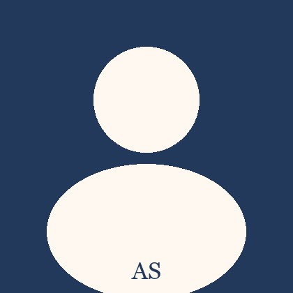

Sobre a biblioteca
A Biblioteca do Bairro abriu em 1987 numa sala emprestada pela junta de freguesia, com quatro estantes e pouco mais de trezentos livros. Hoje ocupa o edifício da Rua das Flores e tem mais de doze mil títulos, entre romance, poesia, ensaio, banda desenhada e literatura infantil.
Continuamos a ser uma biblioteca de bairro: quem entra é recebido pelo nome, os mais novos têm uma sala só para eles e as quintas-feiras terminam sempre com chá e uma conversa sobre livros.
A equipa
-

Ana Silva
Diretora
-

Rui Marques
Bibliotecário
-

Beatriz Lopes
Serviço educativo